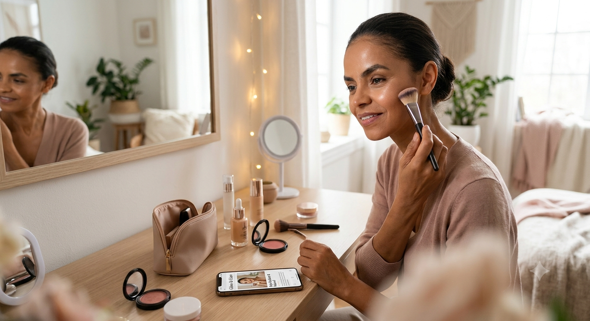

Guia Definitivo: Pele Radiant & Natural para o Dia a Dia

A maquiagem estilo "no-makeup makeup" veio para ficar! O grande segredo para uma pele radiante e com aspecto natural não está na quantidade de base, mas sim na preparação prévia da pele (skincare) e no uso estratégico de iluminadores líquidos.
Passo a passo rápido:
- Hidratação profunda: Aplique um sérum hidratante leve antes de qualquer produto.
- Protetor solar com cor: Substitua bases pesadas por protetores com cor ou BB Creams.
- Corretivo pontual: Aplique apenas onde realmente precisa cobrir (olheiras ou espinhas).
- Toque de cor: Use blush cremoso nas maçãs do rosto para dar aquele ar saudável.
0 curtidas